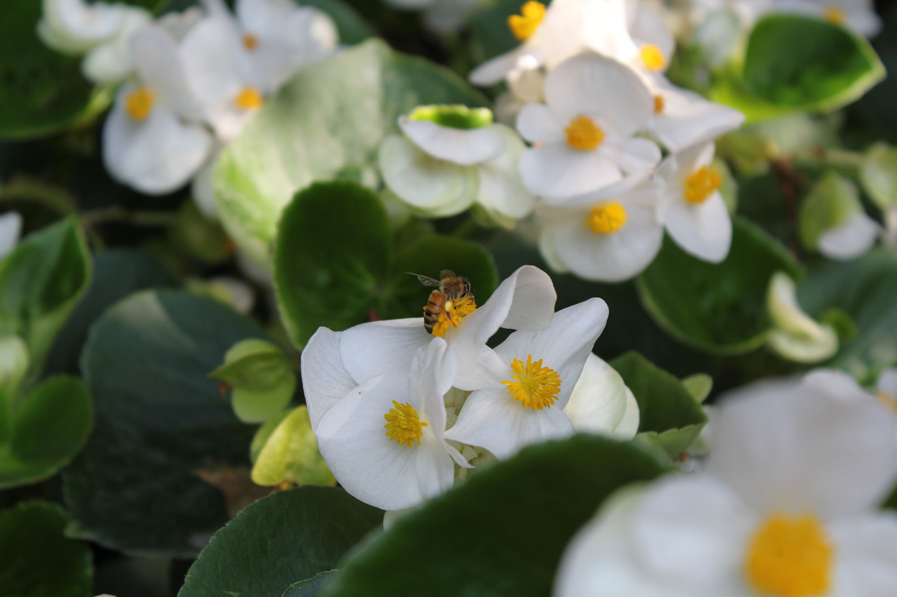
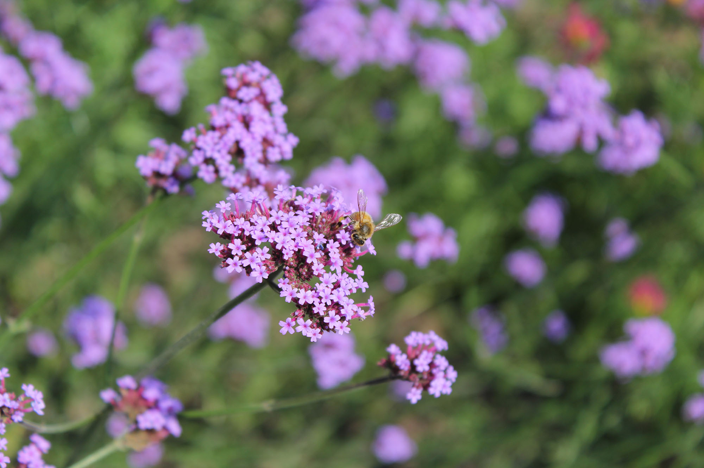
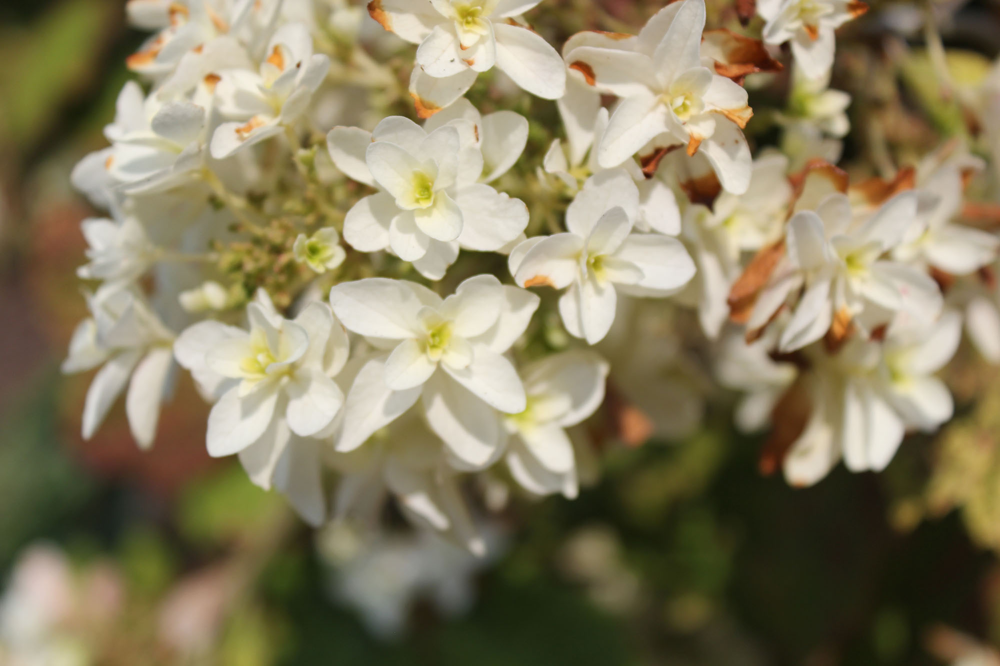
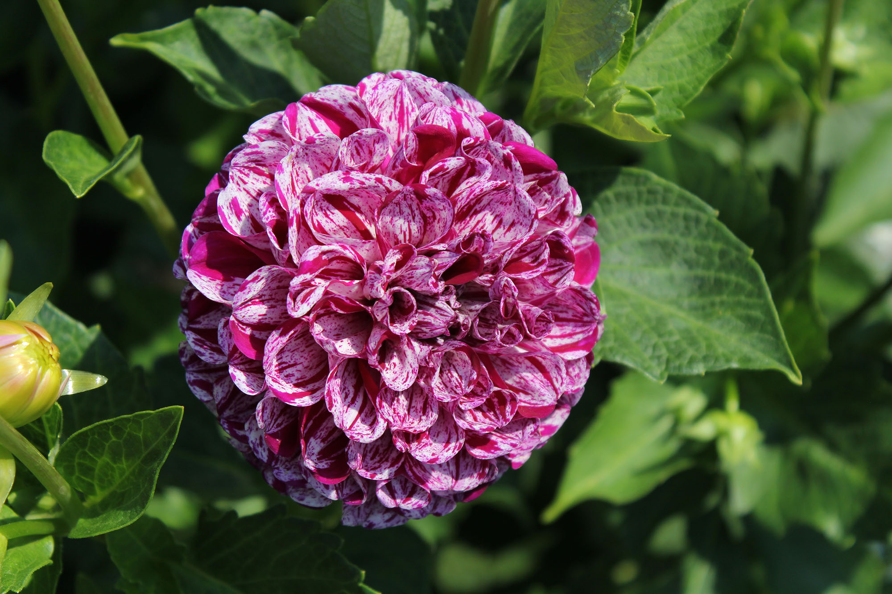
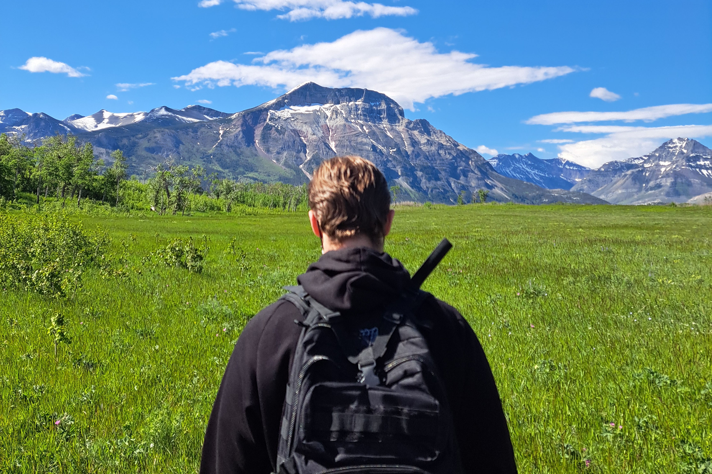
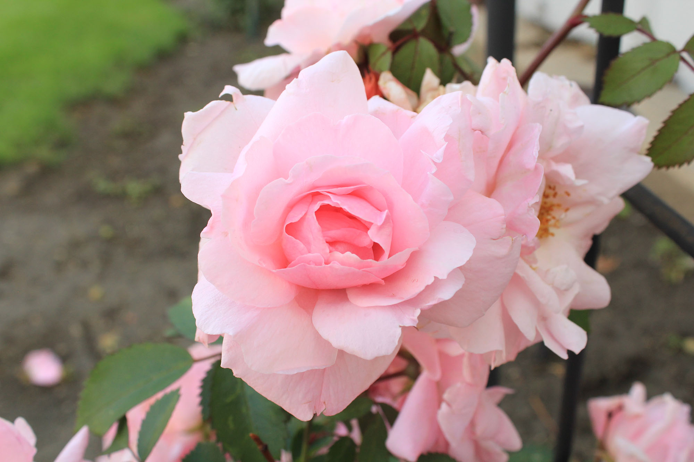
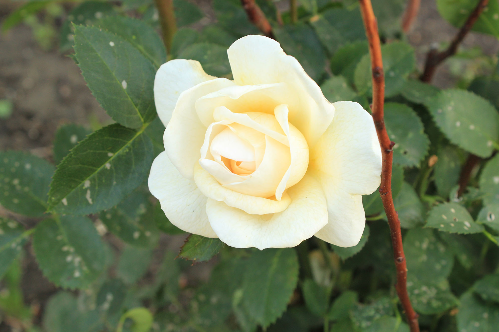
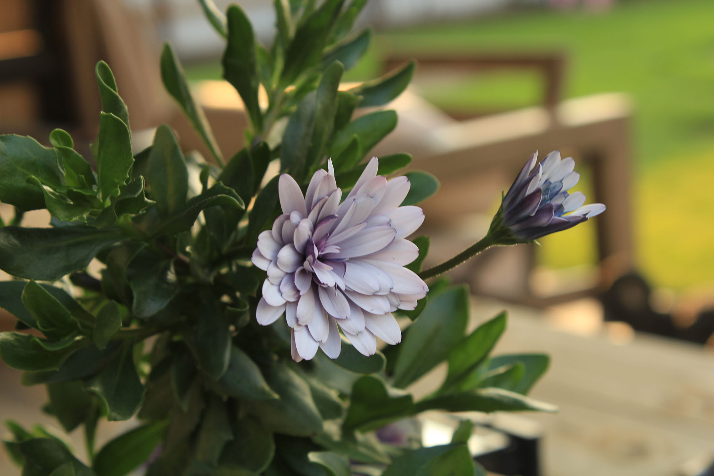
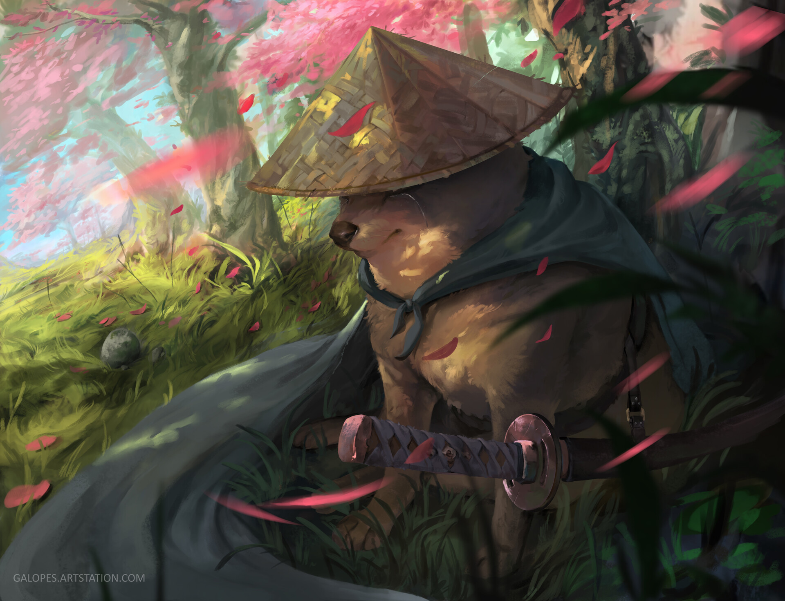
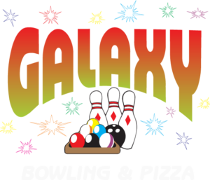

Ethan Neubauer
3D Artist, Photographer, Purple
Photos









3D Artist, Photographer, Purple









I would like to make this into a series of images following this same character across his travels, but my progress really slows down with things like materials. I would like to remake this piece because the branches at the top of the image look strange, the mountain in the background looks out of place, and the colours over all aren't very cohesive.
I made this when I was YEARNING to go bowling. I'm kind of unhappy with this one because I feel like I could have made the perspective a little harsher to give more of an illusion that the ball was moving, because right now it just looks stagnant. Also, you can't see it in the picture, but the topology in all the background text is REALLY bad. I do like the kind of cartoony outlines that I have, but it would have been better if I had an actual toon shader set up instead of doing what I did, which was modelling the outline by hand.


Honestly, I'm pretty happy with how this one turned out. The only thing I can really think of that needs work is the lighting and the texture on the floor, but the car itself is pretty good. I did forget to move the bolts for the other wheel to the right spot so you can see them under the car if you look closely. If I remade this I would probably brighten up the image a bit more and put some work into the background.

I get a lot of my Blender ideas from art I see online. For my Traveler blend I drew inspiration mainly from the above picture drawn by Gabriel Lopes. I also try to challenge myself with each big scene that I make. For Traveler, the challenge was making a human rig that I could use across multiple scenes if I wanted, as well as working on my texturing.

A lot of what I make comes from what I like. You'll never guess why I made bowling (I like bowling.) This is one example of one where I didn't mean to challenge myself but ended up accidentally making things harder for myself with the logo and text in the back. I have since learned to just project images on surfaces instead of modeling it.